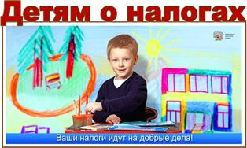
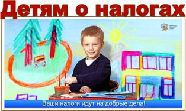

Дополнительные ресурсы

 

ГУО «Ясли-сад №44 г.Бреста» - это современный детский сад в котором функционируют 12 групп, с просторными игровыми комнатами, уютными спальнями и спортивно-музыкальным залом. Наши воспитанники – это малыши от двух до шести лет.
Осознавая значимость развивающей среды в становлении и оздоровлении личности, мы определяем следующие требования к ее организации. Прежде всего, она должна быть безопасной, но в то же время предоставлять ребенку свободу, оказывать положительное влияние на мироощущение, самочувствие и здоровье. Деятельность всего коллектива направлена на создание необходимых условий для достижения оптимального уровня качества образования, на финансовое обеспечение и укрепление материально-технической базы дошкольного учреждения, формирование высокого имиджа дошкольного учреждения в микрорайоне. Мы стремимся создать индивидуальный и стильный облик дошкольного учреждения.
Педагоги целенаправленно работают над решением задач разностороннего развития личности ребёнка дошкольного возраста, в соответствии с его возрастными и индивидуальными возможностями. В дошкольном учреждении созданы благоприятный психологический микроклимат и условия для творческого развития каждого педагога. Используются самые разнообразные формы работы с кадрами, индивидуальный подход к совершенствованию педмастерства как опытных, так и молодых педагоговв. Как результат - стабильность, отсутствие текучести кадров и профессионализм педагогического коллектива. Весь комплекс методических мероприятий позволяет совершенствовать профессионально значимые навыки воспитателей, тем самым повышать качество работы с детьми. Эрудированные, целеустремлённые, коммуникабельные, любящие детей. Именно такие педагоги воспитывают детей в нашем дошкольном учреждении. Они формируют мировоззрение каждого ребёнка, его нравственные позиции, личностные качества, которые позволят ему честно и уверенно идти по жизни, стать настоящим гражданином страны, созидателем родного города.
В учреждении работает ПКПП, где помощь учителя-дефектолога получают дети с нарушением речи.
С целью расширения возможностей в интеллектуальном, эстетическом, художественном и физическом развитии детей в учреждении организованы дополнительные услуги на платной основе.
Сверх базового компонента, хореография и иностранный (английский) язык, а также в рамках базового компонента учебной программы дошкольного образования функционируют «Материнская школа» и адаптационная площадка.